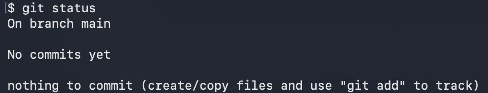
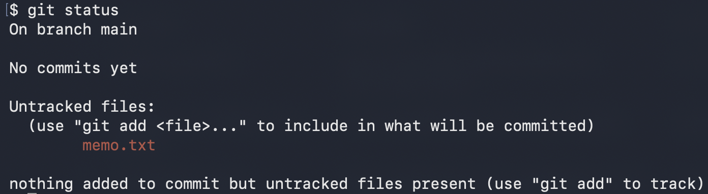
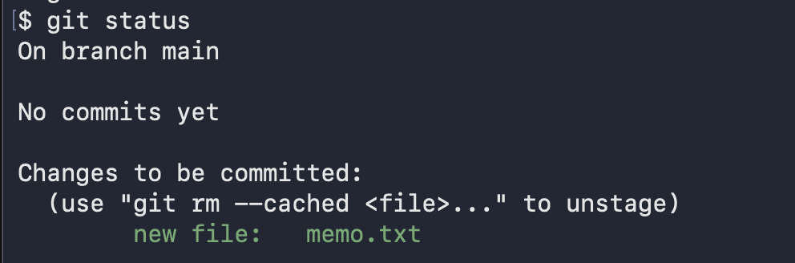
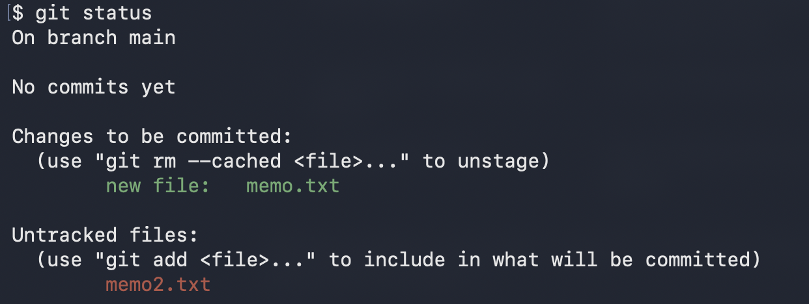
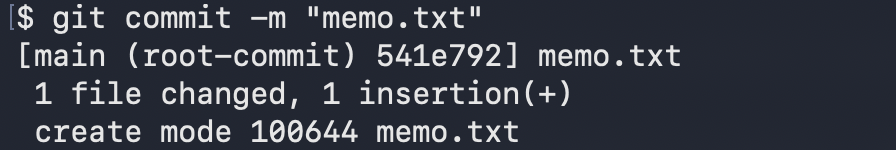
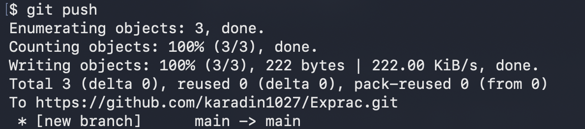
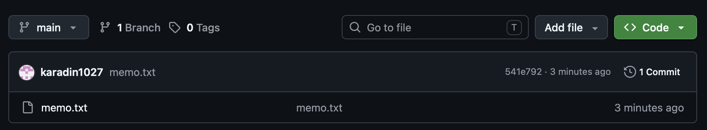
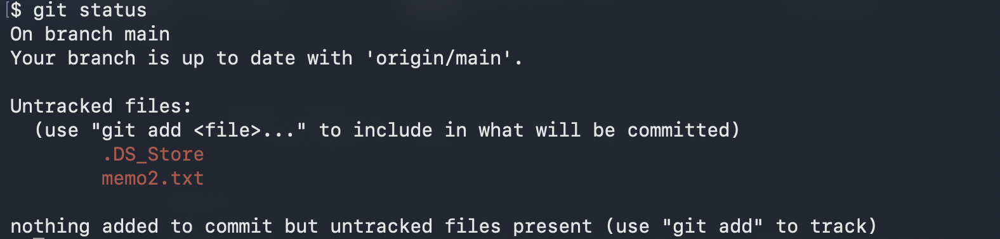
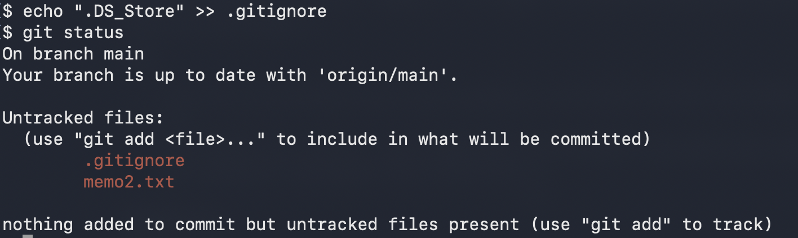

03 · 개인 작업
개인 작업
혼자 작업할 때 가장 자주 반복하는 한 바퀴를 따라 해 봅니다. 파일을 고치고, 기록으로 남기고, GitHub에 올리는 과정입니다.
시작하기 전에
이 페이지는 macOS의 터미널을 기준으로 설명합니다.
터미널은 ⌘ + Space를 눌러 “터미널”을 검색하면 열 수 있습니다.
화면 캡처도 모두 맥에서 찍은 것입니다.
git 명령은 터미널이 서 있는 폴더 기준입니다
git add, git commit 같은 명령은 지금 터미널이 열려 있는 폴더를 기준으로 동작합니다.
그래서 작업할 repo 폴더 안으로 먼저 이동해야 합니다. 아래는 이동할 때 쓰는 기본 명령입니다.
캡처 화면의 프롬프트가 $만 보이는 이유
이 페이지의 캡처는 보기 쉽도록 프롬프트(명령어 앞에 붙는 표시)를 $ 하나로 줄여서 찍었습니다.
내 터미널에는 컴퓨터 이름이나 폴더 이름이 함께 보일 텐데, 그대로 두어도 동작은 같습니다.
Windows를 쓴다면
Git을 설치할 때 함께 들어오는 Git Bash에서 같은 명령을 그대로 쓰면 됩니다.
다만 open .은 explorer .로, 아래에서 나올 .DS_Store는 Thumbs.db로 바꿔 읽으세요.
파일이 거치는 네 개의 공간
파일을 고쳐서 GitHub에 올리기까지 파일은 네 곳을 차례로 지나갑니다. 명령 하나가 파일을 한 칸씩 옮겨 준다고 생각하면 됩니다.
- 작업 폴더 : 평소처럼 파일을 만들고 고치는 곳입니다. 고쳐도 Git은 아직 기록하지 않습니다.
- 스테이징 : 이번 기록에 포함할 파일을 모아 두는 대기 공간입니다.
git add로 파일을 이곳에 올립니다. - 로컬 저장소 :
git commit을 하면 스테이징에 있던 파일들이 하나의 기록으로 저장됩니다. 아직 내 컴퓨터 안에만 있습니다. - GitHub :
git push를 해야 내 컴퓨터의 기록이 온라인 repo에 올라갑니다.
택배 보내기로 생각해 보세요
add는 보낼 물건을 상자에 담는 일, commit은 상자를 포장하고 송장(메시지)을 붙이는 일,
push는 택배를 실제로 보내는 일입니다. 포장까지 해 두어도 발송하기 전에는 상대방(GitHub)에게 도착하지 않습니다.
한 바퀴 돌아보기
혼자 작업할 때는 대부분 이 다섯 단계를 반복합니다.
- 1파일 수정평소 쓰던 편집기에서 파일을 만들거나 고칩니다.
- 2
git status무엇이 바뀌었는지, 지금 어느 공간에 있는지 확인합니다. - 3
git add이번 기록에 넣을 파일을 스테이징에 올립니다. - 4
git commit -m "메시지"스테이징에 있는 파일들을 하나의 기록으로 저장합니다. - 5
git push저장한 기록을 GitHub에 올립니다.
실습용 파일을 터미널에서 만들어 보기
아래 캡처에 나오는 memo.txt는 이렇게 만든 파일입니다.
편집기를 열지 않고도 터미널 명령만으로 파일을 만들고 고칠 수 있습니다.
한 바퀴 전체
각 단계에서 어떤 화면이 나오는지, 아래에서 캡처와 함께 하나씩 봅니다.
git status 읽는 법
git status는 “지금 어떤 상태야?”라고 묻는 명령입니다. 파일은 바꾸지 않으니 몇 번을 쳐도 안전합니다.
헷갈릴 때마다 가장 먼저 치는 습관을 들이세요. 글자 색이 핵심입니다.
색으로 먼저 구분하기
빨간색 = 아직 스테이징에 올리지 않은 파일(add 전), 초록색 = 스테이징에 올라간 파일(다음 commit에 들어감)
1. 아무것도 없는 새 repo

On branch main은 지금 main이라는 branch에 있다는 뜻입니다.
No commits yet은 아직 기록(commit)이 하나도 없다는 뜻이고,
nothing to commit은 기록할 변경이 없다는 뜻입니다.
2. 새 파일을 만들었을 때

Untracked files는 “Git이 아직 추적하지 않는 파일”이라는 뜻입니다.
파일이 새로 생겼지만 기록 대상으로 등록하지 않은 상태라 빨간색으로 보입니다.
괄호 안 안내문대로 git add를 하면 됩니다.
3. add를 한 뒤

Changes to be committed는 “다음 commit에 들어갈 변경”이라는 뜻이고, 초록색으로 바뀝니다.
new file:은 새로 만든 파일이라는 표시입니다.
괄호 안에 git rm --cached라고 적혀 있는데, 이것은 아직 commit이 한 번도 없는 repo라서 나오는 안내입니다.
첫 commit을 한 뒤에는 같은 자리에 git restore --staged <파일>이 나옵니다.
둘 다 “스테이징에 올린 것을 다시 내린다”는 뜻입니다.
4. 초록과 빨강이 섞여 있을 때

memo.txt는 add를 했고, memo2.txt는 아직 하지 않은 상태입니다.
이 상태로 commit하면 초록색인 memo.txt만 기록되고 memo2.txt는 기록에서 빠집니다.
commit하기 전에 status로 빠진 파일이 없는지 확인하는 이유가 이것입니다.
자주 보는 문구 정리
| 문구 | 뜻 | 다음에 할 일 |
|---|---|---|
Untracked files | 새로 생긴 파일. Git이 아직 추적하지 않음 (빨강) | git add |
Changes not staged for commit | 이미 추적 중인 파일을 고쳤지만 add는 안 함 (빨강, modified:로 표시) | git add |
Changes to be committed | add를 마치고 commit을 기다리는 파일 (초록) | git commit |
nothing to commit, working tree clean | 바뀐 파일이 없음 | 없음 |
Your branch is ahead of 'origin/main' by 1 commit | commit은 했지만 아직 GitHub에 올리지 않음 | git push |
Your branch is up to date with 'origin/main' | 내 기록과 GitHub의 기록이 같음 | 없음 |
add, commit, push
add : 기록할 파일 고르기
git add .도 repo의 가장 바깥 폴더에서 치면 -A와 거의 같은 결과입니다.
add는 성공해도 아무 말도 하지 않는 것이 정상입니다. 잘 됐는지는 git status로 확인하세요.
-A는 전부를 담기 때문에 원하지 않는 파일까지 딸려 올 수 있습니다.
그래서 -A 전에는 status를 한 번 보는 것이 좋습니다. (아래의 “올리면 안 되는 파일”에서 이어집니다.)
commit : 기록으로 저장하기

-m "...": 따옴표 안에 이번 기록의 메시지를 적습니다.[main (root-commit) 541e792]: main branch에 기록했다는 뜻입니다.root-commit은 이 repo의 첫 commit이라는 표시이고, 두 번째부터는 나오지 않습니다.541e792는 이 기록의 고유 번호(앞 7자리)입니다.1 file changed, 1 insertion(+): 파일 1개에서 1줄이 추가되었다는 요약입니다.create mode 100644 memo.txt: memo.txt가 새로 만들어졌다는 뜻입니다. 앞의 숫자는 파일 권한이라 신경 쓰지 않아도 됩니다.
-m을 빼먹으면 이상한 화면이 열립니다
git commit만 치면 메시지를 쓰라며 vi라는 편집기가 열립니다. 당황하지 말고 Esc를 누른 뒤
:q!를 치고 엔터를 누르면 빠져나옵니다. commit은 취소되니 -m을 붙여서 다시 치면 됩니다.
push : GitHub에 올리기

main">Enumerating,Counting,Writing objects: 올릴 데이터를 세고 포장해서 보내는 과정입니다.100%와done이 보이면 전송이 끝난 것입니다.To https://github.com/.../Exprac.git: 어디로 올렸는지를 보여 줍니다.[new branch] main -> main: 내 컴퓨터의 main을 GitHub의 main으로 올렸다는 뜻입니다.[new branch]는 GitHub에 main이 이번에 처음 생겼다는 뜻이라 첫 push에만 나옵니다.
GitHub에서 확인하기

파일 목록에 memo.txt가 생겼고, 맨 위 commit 줄에는 방금 적은 메시지와 541e792라는 번호가 보입니다.
터미널의 commit 결과에서 본 번호와 같으니 같은 기록이 올라간 것입니다.
오른쪽의 1 Commit은 지금까지 쌓인 기록이 1개라는 뜻입니다.
commit 메시지 쓰는 법
commit 메시지는 나중에 “이때 무엇을 했지?”를 찾아볼 때 쓰는 이름표입니다. 지금은 나만 보지만, 팀 작업에서는 다른 사람이 읽게 되니 처음부터 습관을 들이는 것이 좋습니다.
이런 메시지는 피하세요
수정asdf최종,최종2,진짜 최종오늘 한 것
이렇게 쓰면 좋습니다
로그인 버튼 색상 변경README에 실행 방법 추가메뉴 링크 오타 수정회원가입 화면 레이아웃 추가
- 무엇을 했는지 한 줄로 : 메시지만 읽어도 어떤 변경인지 알 수 있어야 합니다. 길어도 한 줄에 들어오게 씁니다.
- 한 commit에는 한 가지 일만 : 버튼 색을 바꾸고 README도 고쳤다면 commit을 둘로 나눕니다. 나중에 되돌리거나 찾기 쉬워집니다.
- 말투는 통일하기 : “추가”, “수정”, “삭제”처럼 끝맺음을 하나로 정해 두면 기록이 깔끔합니다. 팀이 정한 규칙이 있다면 그것을 따릅니다.
올리면 안 되는 파일과 .gitignore
git add -A는 폴더 안의 변경을 전부 담습니다. 그래서 올릴 생각이 없던 파일까지 함께 올라갈 수 있습니다.
어떤 파일이 문제가 되는지 먼저 알아 둡니다.
운영체제가 만드는 파일
.DS_Store(맥), Thumbs.db(Windows)는 폴더를 열 때 운영체제가 자동으로 만드는 파일입니다. 프로젝트와 상관없고 컴퓨터마다 달라서 쓸모 없이 기록만 어지럽힙니다.
비밀 정보
비밀번호, API 키, 토큰, 그리고 이런 값을 담아 두는 .env 파일입니다. 공개 repo라면 누구나 볼 수 있습니다.
다시 만들 수 있는 큰 폴더
node_modules/처럼 설치하면 자동으로 생기는 폴더나 빌드 결과물입니다. 용량이 크고 올릴 이유가 없습니다.
비밀 정보는 한 번 올리면 지워도 남습니다
push한 뒤 파일을 삭제해도 예전 기록에는 그 내용이 그대로 남습니다. 실수로 올렸다면 파일을 지우는 것만으로는 부족하고, 그 비밀번호나 키를 새로 발급받아 바꿔야 합니다. 그래서 처음부터 올라가지 않게 막아 두는 것이 가장 안전합니다.
.DS_Store가 status에 나타난 모습
.DS_Store는 Finder로 폴더를 열었을 때 맥이 만들어 두는 숨김 파일입니다. 터미널만 쓰면 안 생기기도 하고,
open .으로 폴더를 열면 생기는 경우가 많습니다.
생기지 않았다면 그대로 괜찮습니다. 생겼다면 status에 이렇게 나타납니다.

이 상태에서 git add -A를 하면 .DS_Store까지 함께 올라갑니다.
올리고 싶은 파일(memo2.txt)만 골라서 add하는 방법도 있지만,
매번 신경 쓰지 않도록 .gitignore 파일에 적어 두는 것이 더 편합니다.
.gitignore 만들기
.gitignore는 “이 파일들은 못 본 척해 줘”라고 Git에게 알려 주는 목록 파일입니다.
한 줄에 하나씩 파일 이름을 적습니다.

> .gitignore 후 git status: .gitignore와 memo2.txt만 Untracked files에 보임">
.DS_Store가 목록에서 사라졌습니다. 대신 .gitignore 파일 자신이 새 파일로 나타났는데,
이것은 정상입니다. .gitignore도 add, commit, push해서 repo에 올려 두어야
팀원들의 컴퓨터에서도 같은 규칙이 적용됩니다.
.gitignore에 자주 적는 항목
파일 안에는 이런 식으로 한 줄에 하나씩 적습니다.
/로 끝나면 폴더를 뜻하고, *는 “아무 글자나”라는 뜻이라 *.log는 확장자가 .log인 모든 파일을 가리킵니다.
이미 add나 commit을 해 버렸다면
.gitignore는 아직 추적하지 않는 파일에만 효과가 있습니다.
이미 스테이징에 올렸거나 commit한 파일은 먼저 Git의 추적에서 빼야 합니다.
정리
이 페이지에서 기억할 것
- 한 바퀴는 수정 → status → add → commit → push입니다.
- 파일은 작업 폴더 → 스테이징 → 로컬 저장소 → GitHub 순서로 이동하고, 명령 하나가 한 칸씩 옮깁니다.
- 헷갈리면
git status를 치고 색을 봅니다. 빨강은 add 전, 초록은 commit 대기입니다. - commit 메시지는 나중에 읽을 이름표입니다. 무엇을 했는지 한 줄로 적습니다.
- 올리면 안 되는 파일은
.gitignore에 적어 두고, 비밀 정보는 절대 올리지 않습니다.